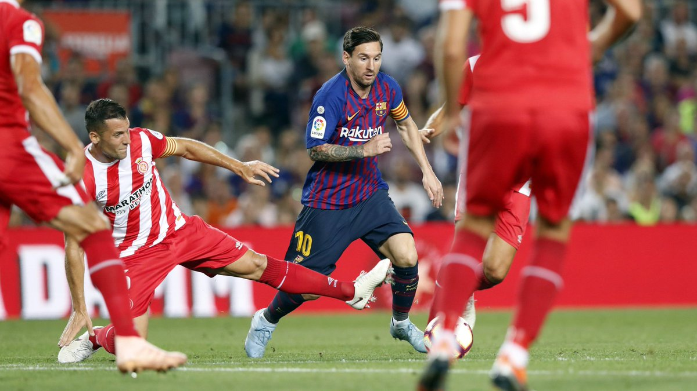
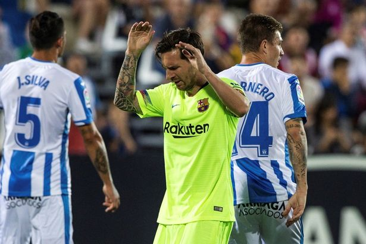

Barca sa sút: Lỗi ở Messi hay Valverde?
Barcelona đang sa sút khó hiểu. Bản thân Lionel Messi hay HLV Ernesto Valverde sẽ được nhắc đến sau chuỗi kết quả thất vọng đó.
Barcelona khởi đầu mùa giải mới không thể tuyệt vời hơn. Đội bóng xứ Catalan liên tục giành chiến thắng khiến người hâm mộ nghĩ rằng, phải mất thời gian khá dài, các đối thủ mới ngăn chặn sức mạnh đó. Tuy nhiên, bất ngờ thay, chỉ trong vòng vỏn vẹn 3 ngày, sức mạnh được xem là toàn diện với chuỗi 7 chiến thắng liên tiếp trên mọi đấu trường đã bị phơi bày. Đội bóng xứ Catalan bị Girona cầm hòa trên sân nhà và thất bại trước Leganes.
Xét trên mọi khía cạnh, hai đối thủ đó chỉ được xem là phận “em út” của đoàn quân HLV Ernesto Valverde. Thế nhưng, họ vẫn không giành chiến thắng. Đến nỗi, HLV Valverde ca thán: ““Rất khó để giải thích về điều này. Chúng tôi sẽ phải nhanh chóng tìm ra nguyên nhân và trở lại với nhịp độ chiến thắng. Dẫu sao, mùa giải chỉ mới bắt đầu và mọi sai lầm đều có thời gian để sửa chữa”. Ở hai trận đấu vừa rồi, hàng thủ chính là điểm yếu lớn nhất của đội bóng xứ Catalan. Bốn bàn thua phải nhận lấy trước các đối thủ không có hàng công mạnh là điều khó có thể chấp nhận. Đáng nói, những bàn thua đều đến từ sai lầm cá nhân. Điều này đã được cảnh báo từ trước khi hàng phòng ngự của đội chủ sân Nou Camp liên tục mắc những sai lầm khó hiểu ở mùa giải này. Với hai bàn thua phải nhận lấy trong trận đấu với Leganes, tổng thể, đội bóng của HLV Valverde đã phải nhận tới 7 bàn thua trong 4 trận đấu gần nhất tại La Liga. Một con số phải giật mình chứ không phải là của nhà vô địch. Ở đó, chính HLV Valverde mới là người chịu trách nhiệm đầu tiên. Ông liên tục xoay tua đội hình, trao cơ hội cho rất nhiều cầu thủ ra sân. Tuy nhiên, sai lầm lớn nhất của ông là xây dựng hàng thủ với nhiều cầu thủ lớn tuổi.
Gerard Pique hay Thomas Vermaelen đều đã lớn tuổi, khả năng xoay trở chậm khiến khung thành đội nhà luôn đặt trong tình trạng chao đảo. Trên hàng công, việc quá phụ thuộc vào Messi dẫn đến hệ quả đường vào khung thành đối phương dễ bị bắt bài. Trong tay ông vẫn có nhiều ngôi sao tấn công như Dembele, Luis Suarez hay Philippe Coutinho song tiền đạo người Argentina vẫn khó thay thế. Đó cũng chính là vấn đề của đội bóng xứ Catalan ở thời điểm hiện tại. Không ai phủ nhận tầm quan trọng của Messi song thực tế, gánh nặng lên vai tiền đạo sắp bước sang tuổi 32 cần được cởi bỏ. Đó cũng là cách giúp lối chơi của đội bóng xứ Catalan mang tính đột biến cao. Messi không có lỗi trong hai trận đấu thất vọng vừa rồi của đội nhà nhưng cách HLV Ernesto vẫn xây dựng lối chơi xung quanh Messi khiến họ có lỗi với người hâm mộ.